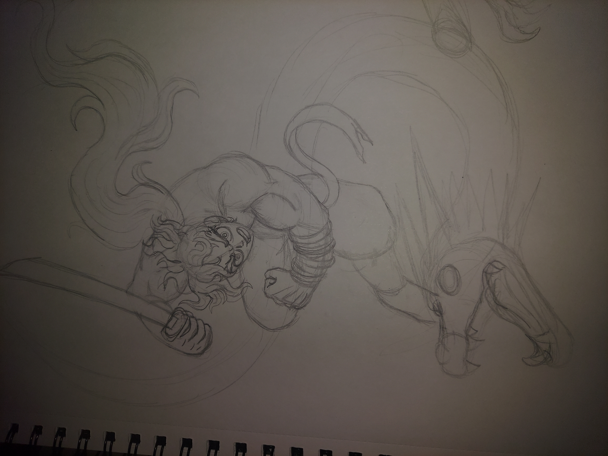

New Art
Kyomu Senki: Miroku Fanart

I started drawing this piece around the 16th of April, 2024. It depicts the character from the obscure manga Kyomu Senki. His name is Miroku, and he is one of the main characters. The manga itself was written by the late Ken Ishikawa, being an anthology of almost every story he worked on during the 80s. I decided to start off with the pose, and I actually didn't know which character I wanted to use first. I settled on Miroku since I never drew him before. I'll finish it when I finish it. Too much work until the beginning of May.